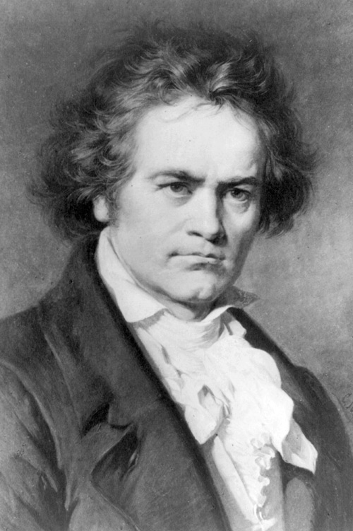

Beethoven Symphony No. 8
February 10-12: Fri-Sat @ 7:30, Sun @ 1:00
Beethoven's Eighth — which he referred to as “my little Symphony in F,”— is the most cheery, joyful, and experimental of his symphonies. Its relatively compact scale allowed Beethoven to be more imaginative and structurally radical than he could dare to be on the larger canvases of his other symphonies. Light-hearted and full of charm, the Eighth is an often-overlooked gem that will shine under the baton of Resident Conductor Christopher Dragon. Celebrate the Colorado Symphony Horns as they take center stage on Schumann's Konzertstück for 4 Horns and Orchestra, incorporating the warmth, nobility, and hunting-horn origins of German Romantic-era music while conjuring images of the unspoiled forests of the German landscape. In an ironic twist, the performance begins with a “Farewell”, harkening back to the piece's debut when Haydn instructed his musicians to stop playing one by one during the final movement, snuff out the candle on their music stand, and walk off the stage in turn, leaving just two violins to convey the final notes. In this uniquely imaginative performance, seeing is believing.
Featured Artists
Christopher Dragon, conductor
Colorado Symphony Horn Section:
Michael Thornton
Kolio Plachkov
Carolyn Kunicki
Matt Eckenhoff
Repertoire
HAYDN Symphony No. 45 in F-sharp minor, “Farewell"
R. SCHUMANN Konzertstück for 4 Horns and Orchestra in F major, Op. 86
BEETHOVEN Symphony No. 8 in F major, Op. 93